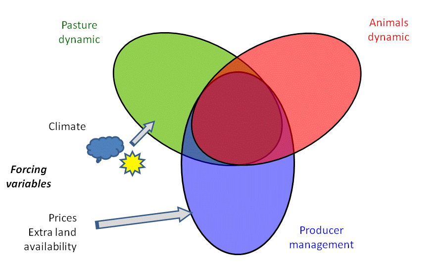
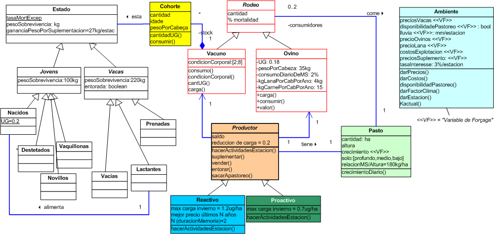
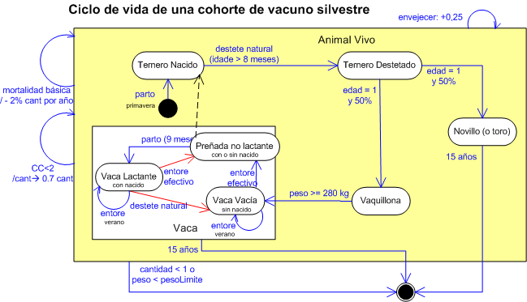
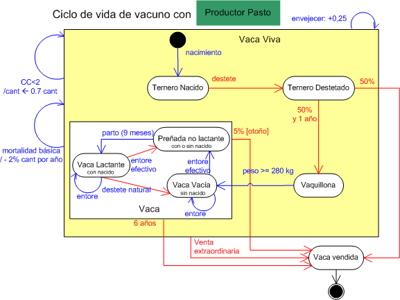
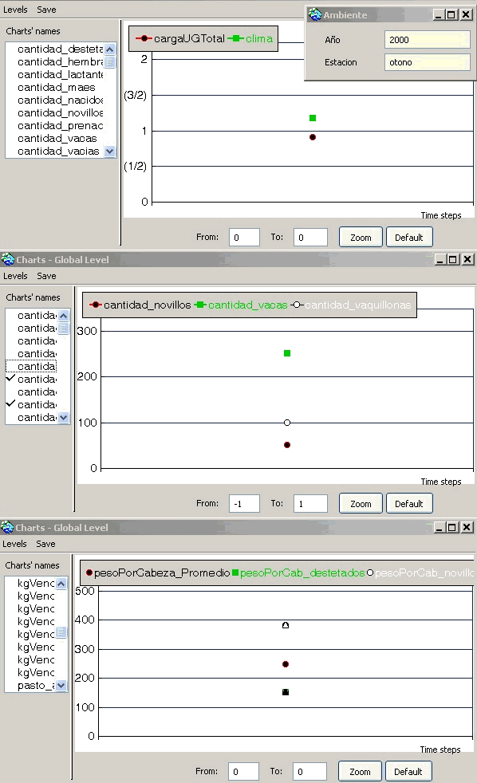
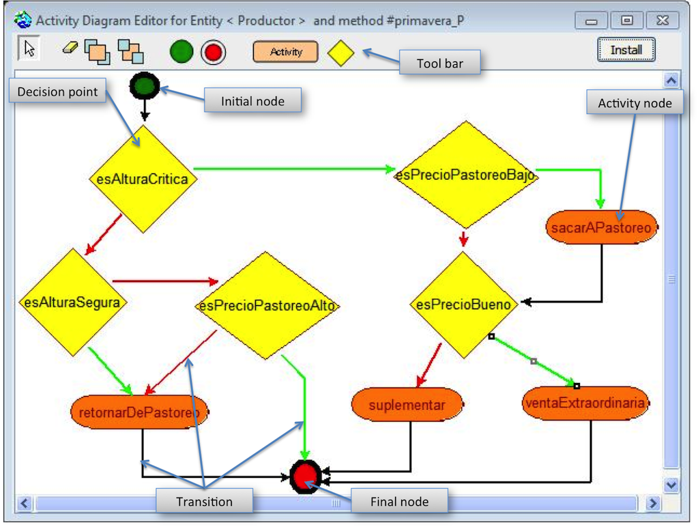
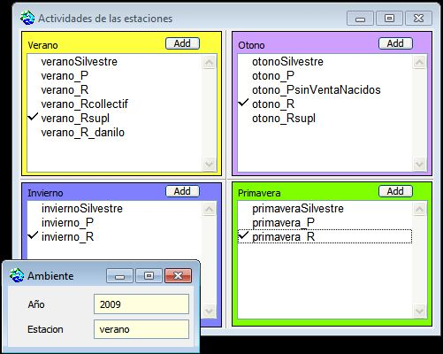

|
Sequía basalto
Modelación y simulación participativa para contribuir a la comprensión y comunicación del fenómeno de la sequía y mejorar la capacidad de adaptación de productores ganaderos del basalto - Uruguay.Participantes
:
Danilo Bartaburu - Instituto Plan Agropecuario, Salto, Uruguay. dbartaburu@planagropecurio.org.uy Francisco Dieguez - Instituto Plan Agropecuario, Montevideo, Uruguay. fdieguez@planagropecuario.org.uy Jorge
Corral - Facultad de Ingeniería, Montevideo,
Uruguay. jcorral@adinet.com.uy Hermes
Morales - Instituto Plan Agropecuario, Salto,
Uruguay. paisanohermes@hotmail.com Emilio
Duarte - Instituto Plan Agropecuario, Salto,
Uruguay. eduarte@planagropecuario.org.uy Esteban
Montes - Instituto Plan Agropecuario, Salto,
Uruguay. emontes@planagropecuario.org.uy Marcelo
Pereira - Instituto Plan Agropecuario, Salto,
Uruguay. pmsacra@adinet.com.uy Pedro De Hegedus - Faculdad de Agronomía, Udelar, Montevideo, Uruguay. phegedus@adinet.com.uy Pierre
Bommel - CIRAD y Universidad de Brasilia, Francia y
Brasil. bommel@cirad.fr
Este proyecto Sequía esta financiado por INIA, desde mayo 2009 hasta abril 2011.
La sequía es uno de los eventos que mayores consecuencias negativas provoca sobre las empresas ganaderas del basalto y su gente. La mayoría de las empresas ganaderas de la región están asentadas sobre suelos de basalto superficial con muy reducida capacidad de acumular agua en el perfil, transformándolo en suelos de alto riesgo de sequía con consecuencias negativas en la producción de forraje, en la producción animal y la economía de los predios. Adicionalmente, el evento sequía podrá darse con mayor frecuencia en el futuro, como consecuencia del cambio climático en proceso. Por otro lado, es notoria la formación y acumulación de conocimiento local en las acciones prediales sobre "estrategias de adaptación frente a la sequía". Dicho conocimiento local , no ha sido relevado ni considerado, por lo cual la comprensión y comunicación del problema , es escasa, impidiendo la mejor toma de decisión y colaboración a todo nivel. . Objetivo del modeloEl modelo de simulación tiene el propósito de explorar las consecuencias de distintas estrategias sobre la trayectoria de explotaciones ganaderas, en especial teniendo en cuenta la incidencia de las sequías. Dos estrategias arquetipicas fueron definidas:
El modelo consiste en tres submodelos:  Descripción del modeloEl diagrama de clases seguinte mostra las principales clases del modelo.  El step es estacional mas esta divido em sub-step diario para las interacciones Pasto-Rodeo:
El diagrama de estado-transición seguinte mostra el ciclo de vida de una cohorte de vacuno silvestre con sus sub-estados.  Este diagrama de estado-transición es un ejemplo de la adaptación del ciclo de vida silvestre para un "Productor Pasto".  Y ahora, un ejemplo de diagrama de actividad del "Productor Pasto" (o de "Productor CC") y sus decisiones durante el invierno:
Algunos resultadosLa simulación seguinte mostra la evolución del clima, del pasto y del rodeo de vacuno:  Modelo interactivo.Para la última versión del modelo, una herramienta de modelaje colaborativa fue diseñada. Este es un editor de diagrama de actividad ejecutable. Con esto, se puede cambiar "on the fly" el comportamiento del agente sin necesidad de programación. Los nuevos diagramas (creado por los usuarios) son dinámicamente interpretados por Cormas y se guardan con el código del modelo. El Ejecutable Editor UML (ejemplo de actividad en Primavera):  Al editar una actividad (o un punto de decisión), el usuario puede elegir el método que se ejecutará. El puede ver los comentarios asociados a este método o también se puede ver el código haciendo doble clic sobre ella.
Para editar los gráficos o elegir qué diagramas se van a utilizar durante la simulación, el usuario selecciona los nombres de los métodos que se ejecutarán en cada estación. 
|
|